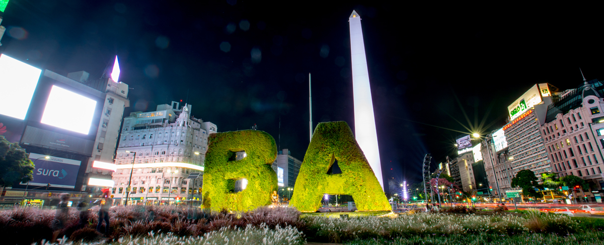
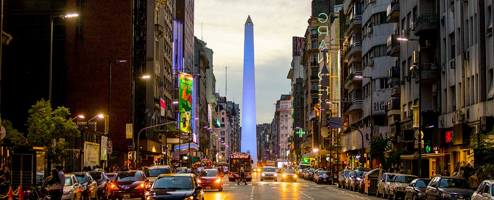

BUENOS AIRES
La Ciudad que Nunca duerme

Tambien conocida como la Ciudad de la Furia

El Obelisco es el mayor emblema de la Ciudad de Buenos Aires y de sus habitantes, como lo son la Torre Eiffel respecto a París o la Estatua de la Libertad en relación a Nueva York.
El Teatro Colón es uno de los imperdibles del mundo de la lírica y está a la altura de La Scala de Milán, la Ópera Garnier de París y el Royal Opera House de Londres.
La Casa Rosada es un palacio ubicado frente a la Plaza de Mayo que funciona como sede del Gobierno Nacional. Este imponente edificio de color rosado ocupa el predio donde se erigió en 1580 el Fuerte de Buenos Aires.
El Museo ocupa el edificio donde funcionó el Cabildo de la Ciudad de la Trinidad y Puerto de Santa María de los Buenos Aires, capital del Virreinato del Río de la Plata.s

Caminito es uno de los paseos más emblemáticos de la Ciudad y de los atractivos imperdibles para quienes lo visitan.Fue el propio Quinquela Martín quien, en 1959, impulsó que se lo bautizara con el nombre del célebre tango “Caminito”, compuesto por Juan de Dios Filiberto y Gabino Coria Peñaloza.
El Cementerio de la Recoleta se encuentra ubicado en el exclusivo barrio de la Recoleta,es el más visitado de la ciudad, por sus numerosos e imponentes mausoleos y bóvedas.